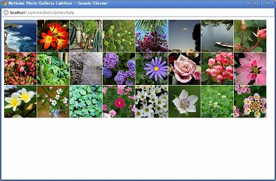
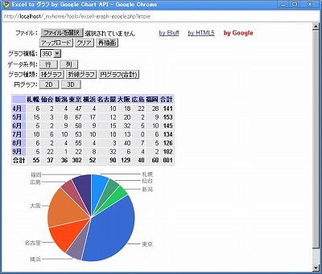
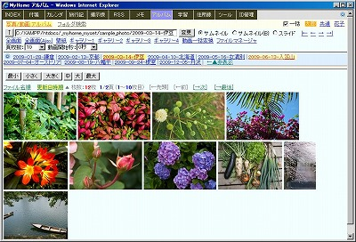
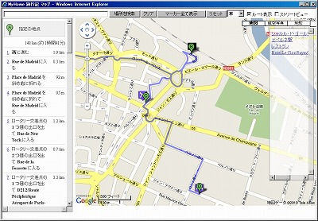
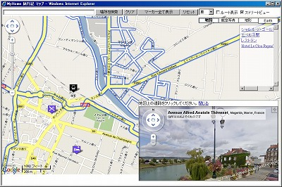
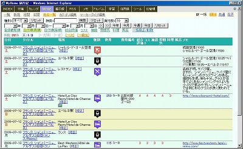

MyHome Portal 変更履歴
以下は、バージョン2.75以前の履歴です。 最新(2.76以降)の履歴に戻る
MyHome Portal Ver.2.75 (2010/06/18)
- 変更点
- アルバムの「ギャラリ1」で、オートプレイが出来るようにしました。キーボードの[A]キーでオートプレイのON/OFFができます。
- アルバムの「全画面スライドショー」「全画面(Ajax)スライドショー」「ギャラリ1」で、オートプレイの時間間隔を変更できるようにしました。キーボードの数字キー[1]～[9]を押すと時間間隔が変更されます。
- 動画のサムネイル画像を、該当フォルダの下の「___thumb___」フォルダに保存するようにしました。これにより、動画のサムネイル表示が高速になりました。「動画時間分割」のサムネイル画像も同様に保存しますので、2回目からは高速に表示できます。
- 変更モジュール
・photo/index.php, slide.php, gallery1.php, gallery2.php
・photo/video-jpeg.php
・photo/scripts/jquery.gallery.js
・photo/css/gallery-style.css
MyHome Portal Ver.2.74 (2010/06/12)
- 変更点
- アルバムにJavaScriptを利用したイメージ・ギャラリーを4種類追加しました。アルバムの任意のカレント・ディレクトリの画像でスムーズなスライドショーができます。
ギャラリー表示開始時に、カレント・ディレクトリのすべてのサムネイル画像をブラウザに取り込みますので、カレント・ディレクトリに画像が多いと最初の表示まで時間がかかります。
1つ目は、「Fresh Sliding Thumbnails Gallery with jQuery and PHP」を利用しています。IE6では正常動作しません
http://tympanus.net/codrops/2010/05/23/fresh-sliding-thumbnails-gallery-with-jquery-php/
2つ目は、「Sliding Panel Photo Wall Gallery with jQuery」を利用しています。IE6では正常動作しません
http://tympanus.net/codrops/2010/05/14/sliding-panel-photo-wall-gallery-with-jquery/
- 3つ目と4つ目は、ライブラリ「Galleria」を利用した画像ギャラリーです。IEでは正常動作しません。
http://galleria.aino.se/
 - ツールに「Google Chart API」を使った「Excel to グラフ by Google」を追加。ワンクリックで、「Excel to グラフ by Bluff」、「Excel to グラフ by HTML5」とグラフを切り替えできます。
http://code.google.com/intl/ja/apis/charttools/index.html
 - ツール「Excel to グラフ by HTML5」で、データ系列（行・列）を選択できるようにしました。円グラフは行・列の合計値で生成するようにしました。
- 変更モジュール
・photo/index.php
・tools/index.php, excel-graph-bluff.php, excel-graph-html5.php - 追加モジュール
・photo/gallery1.php, gallery-thumbs.php, gallery2.php
・photo/scripts/jquery.gallery.js
・photo/css/gallery-style.css, gallery2-style.css
・photo/icons/*
・photo/gallery3.php, gallery4.php
・photo/galleria/*
・tools/excel-graph-google.php, __include-common-excel-graph.php
・style/original/tools-excel-graph.css
MyHome Portal Ver.2.73 (2010/05/28)
- 変更点
- 実運用定義ファイルで、
define("PAGE_BODY_STYLE", "max-width: 100%;")を指定した時にレイアウトが崩れる問題の対処。
＊1：INDEXトップページの右サイドのブログパーツが縦に並ばないことがある場合の対処。
index.cssの「div.side_parts」に、「clear: both;」を追加。
＊2：付箋ボードが左揃えにならないことの対処。
sticky/index-body.phpの<div id="board">に、 「float:left;」を追加。
＊3：カレンダーの天気出現地図が、ブラウザによっては、横に拡がってしまうことに対処。
map-japan-weather.cssの「table#clickable_map」に「width:900px;」を追加。 - 変更モジュール
・sticky/index-body.php
・style/original/index.css, map-japan-weather.css
MyHome Portal Ver.2.72 (2010/05/28)
- 変更点
- ツールに「Google Maps API V3版 (Earthなし)」を追加。
Google Maps Javascript API V3では、Google Earth APIがサポートされていないため、Earth機能は付いていません。Googleマップのサイト自体にはEarth機能が追加されているのに、なぜ、API(V3)ではサポートされないのか？Earth機能がサポートされないと、Google Maps APIを使ったMyHome PortalのコンテンツをV3対応に出来ない。
Google Maps Javascript API V3ではAPI Keyが不要になったため、家庭内LANで別PCからのアクセスも問題なくできます。(http://localhost以外でも正常に動作。)
＜補足＞Google Maps API V3で、
<!DOCTYPE html PUBLIC "-//W3C//DTD XHTML 1.0 Strict//EN" "http://www.w3.org/TR/xhtml1/DTD/xhtml1-strict.dtd">
を指定してストリートビューを使う(streetViewControl: trueにする)とIEでは画面が崩れて誤動作するため、
<!DOCTYPE HTML PUBLIC "-//W3C//DTD HTML 4.01 Transitional//EN">
に変更。 - アルバムのサムネイルの画像クリックで画像をポップアップで拡大表示するように仕様変更。
JavaScriptは以下のものを使わせていただきました。
http://rgrg.blog61.fc2.com/blog-entry-593.html
＜補足＞ IEではポップアップ画像のheight指定をする場合、widthも指定しないと縦横比が崩れるため、静止画はサーバー側(PHP)で、動画はクライアント側(JavaScript)で画像のサイズを取得して処理。 - アルバムのサムネイル(B)の画像クリックでスライドモードにページ遷移するように仕様変更。
- アルバムのスライドからサムネイルにページ遷移する時に、カレントの表示画像が表示されるページに遷移しない不具合を修正。
- 各コンテンツの一覧形式の一括修正/追加/削除画面のinput type="text"枠とtextarea枠の横幅を、それぞれsize×5、cols×5のpxでwidth設定するように変更しました。ブラウザ間の差異を減らすためです。とくにSafari対応です。
- faviconアイコンを実運用定義ファイルで設定できるようにしました。
define("FAVICON_ICON", "../images/favicon/house_red.ico"); - 変更モジュール
・__common__/__define_common.php, include-common-html.php, include-common-mp-list.php
・index/__html-my-header.php
・photo/index.php
・tools/index.php
・__define_common_my_sample.php - 追加モジュール
・tools/google-maps-earth-v3.php
・images/favicon/*.ico
MyHome Portal Ver.2.71 (2010/05/08)
- 変更点
- 最新のバージョンのGoogle Chromeで、CSSのデフォルト値リセットのため
* { margin: 0px; padding: 0px; }を設定していると、ボタンが小さく表示されてしまう問題に対処。
Google Chromeでは、なぜかボタンにbackground-colorを指定しないとline-heightが有効にならない(?)ので、全ブラウザでのボタンイメージを統一するため、background-colorを指定。(IE6では有効になりません。)input[type="submit"] { background-color: #e0e0e0; } input[type="reset"] { background-color: #e0e0e0; } input[type="button"] { background-color: #e0e0e0; } button { background-color: #e0e0e0; } -
なお、Google Chromeだけ、selectボックスの高さが狭くなってしまいます。
Google Chrome用CSSハックと言われているbody:nth-of-type(1)を使ってselectのline-heightを指定しても有効にならず。以下のようにpaddingを指定すると有効になるが、今後Google ChromeのCSS仕様変更があるとおかしくなりそうなので、止めました。body:nth-of-type(1) select { padding: 2px 0; } - アルバムにフォルダ検索機能を追加。
カレントフォルダ以下のフォルダ名を検索します。指定フォルダ内のファイルやフォルダが多いと時間がかかります。検索するフォルダ階層を制限してください。

- 変更モジュール
・style/original/common.css, tools_common.css, todo.css, chat.css
・その他CSSを直接記述しているphp - 追加モジュール
・photo/search.php
MyHome Portal Ver.2.70 (2010/04/23)
- 変更点
- INDEXトップページの検索ボタンのうち、「乗換(駅探)」が駅探サイトがUTF-8をサポートしなくなった(?)ようで乗車駅、下車駅が文字化けしてしまう問題を修正。
- INDEXトップページの「鉄道・乗換」の中にサンプルとして入れている「乗換(駅探)」検索フォームでも、同じ原因で不具合が生じていたため、修正。
既に実運用の場合は、修正画面でHTML(ブログパーツ)を、以下に置き換えてください。function Norikae_Ekitan()のencodeURLをEscapeSJISに修正するだけでもOKです。
<form name="norikae_form" target="_self" style="border:1px solid #808080;background-color:#F0E68C;margin:5px;padding:3px;"> 乗車：<input type="text" name="SF" size="12"><br> 下車：<input type="text" name="ST" size="12"><br> <input type="button" value="乗換(駅探)" onClick="Norikae_Ekitan()"><br> <input type="button" value="乗換(Google)" onClick="Norikae_Google()"><br> </form> <script language="JavaScript"> function Norikae_Google() { url = "http://maps.google.co.jp/maps?ie=UTF8&f=d&ttype=dep&dirflg=r"; url = url + "&saddr=" + encodeURL(document.norikae_form.SF.value); url = url + "&daddr=" + encodeURL(document.norikae_form.ST.value); top.location.href = url; } function Norikae_Ekitan() { url = "http://transit.ekitan.com/norikae/NorikaeSearch"; url = url + "?SFNAME=" + EscapeSJIS(document.norikae_form.SF.value); url = url + "&STNAME=" + EscapeSJIS(document.norikae_form.ST.value); top.location.href = url; } </script> - 変更モジュール
・index/__define_index_search.php
・__define_index_search_my_google.php, __define_index_search_my_yahoo.php
MyHome Portal Ver.2.69 (2010/04/12)
- 変更点
- INDEXトップページに、ピックアップURL機能を追加しました。良く使うホームページを通常のインデックスとは別に、ページ上段にタイル形式で表示します。


- 既に前のバージョンで実運用中の場合は、ピックアップURL用のテーブル「m_oftenuse」を、データベース「_db_index/_mydb_index」に追加してください。MySQL管理者ユーザーrootのパスワードを「kanri789」、インストールドライブを「D:」として説明します。
d: cd "D:\xampp\htdocs\_myhome\z_db_backup" mysql -u root -pkanri789 _db_index < _db_index_add_m_oftenuse.txt mysql -u root -pkanri789 _mydb_index < _db_index_add_m_oftenuse.txt
- 旅行記、掲示板、メモで、動画の自動再生をしないようにしました。
- Ver.2.68で追加したJavaScript時計「blog-parts/myhome-clock.inc」が、月日が2桁になると横幅が広がってしまうので、微調整しました。
- メモ等の検索文字をハイライトする処理の不備を修正。
- 変更モジュール
・__common__/include-common-html.php, include-common-all.php
・index/__define.php, __html-my-header.php, _contents-header.php, index.php
・style/original/index.css
・blog-parts/myhome-clock.inc
・scripts/JWPlayer/movie_preview.js
・__define_common_my_sample.php - 追加モジュール
・index/oftenuse.php
・z_db_backup/_db_index_add_m_oftenuse.txt
MyHome Portal Ver.2.68 (2010/04/07)
- 変更点
- INDEXトップページ右上のFlashの時計を、オリジナルのシンプルなJavaScriptの時計にしました。
既に前のバージョンで実運用中の場合は、「myhome-clock.inc」を実運用環境のディレクトリにコピーして下さい。インストールドライブが「D:」の場合の例は以下です。
copy D:\xampp\htdocs\_myhome\blog-parts\myhome-clock.inc D:\xampp\htdocs\_blog-parts
前のFlashの時計に戻したい場合は、実運用定義ファイルで以下の指定をしてください。
define("BLOG_PARTS_SCRIPT_RIGHT1_index", "clock-simple-blue.inc") - メモ等で、検索文字をハイライトする場合、英字の小文字/大文字が一致していないとハイライトされなかった問題を修正。
- カレンダーの検索で、HTMLタグ内文字も検索対象になっていたのを、検索対象から外すようにしました。
- カレンダーの検索で、HTMLタグ内文字を検索しないようにするために、カレンダーのデータベース「_db_calendar」/「_mydb_calendar」のテーブル「m_schedule」に列「c_memo_strip_tags」を追加しました。既に前のバージョンで実運用中の場合は、以下の手順で、列の追加とデータの更新作業を行ってください。
【列「c_memo_strip_tags」の追加】
データベース「_db_calendar」/「_mydb_calendar」のテーブル「m_schedule」に列「c_memo_strip_tags」の追加をします。MySQL管理者ユーザーrootのパスワードを「kanri789」、インストールドライブを「D:」として説明します。
《サンプルDBの場合》
mysql -u root -pkanri789 use _db_calendar; ALTER TABLE m_schedule ADD c_memo_strip_tags longtext NOT NULL AFTER c_memo; exit; D: cd "D:\xampp\htdocs\_myhome\z_db_backup" mysql -u root -pkanri789 _db_calendar < create_view_db_calendar.txt《実運用DBの場合》
mysql -u root -pkanri789 use _mydb_calendar; ALTER TABLE m_schedule ADD c_memo_strip_tags longtext NOT NULL AFTER c_memo; exit; D: cd "D:\xampp\htdocs\_myhome\z_db_backup" mysql -u root -pkanri789 _mydb_calendar < create_view_mydb_calendar.txt【列「c_memo_strip_tags」データ更新】
データベース「_db_calendar」/「_mydb_calendar」のテーブル「m_schedule」に列「c_memo_strip_tags」のデータ更新をするには、 次を実行してください。
■カレンダーのm_schedule「c_memo_strip_tags」データ更新(登録)
http://localhost/_myhome/tools/calendar-memo-strip-tags-268.php
・__common__/include-common-all.php, include-common-mp-list.php, __define_common.php
・calendar/_my_calendar.php, input.php, list.php, maps.php, maps-alone.php
・diary/view.php, list-marker-template.php, __include-maps.php
・z_db_backup/create_view_db_calendar.txt, create_view_mydb_calendar.txt
・__define_common_my_sample.php
・blog-parts/myhome-clock.inc
・tools/calendar-memo-strip-tags-268.php
MyHome Portal Ver.2.67 (2010/04/04)
- 変更点
- INDEX、カレンダー、旅行記、メモ、学習、住所録、ID管理、預貯金管理、利用ガイド、ユーザー一覧のそれぞれの検索機能で、検索キーにAND,ORおよび()を使った複合検索ができるようにしました。ANDは「&」または「*」、ORは「|」「+」を使います。
[例] ( 赤坂 | 六本木 ) & イタリアン
[例] ( 赤坂 + 六本木 ) * イタリアン
スペース(空白)は入れても入れなくても構いません。&|*+()は、全角も可です。
&|*+()を正しく入れないとSQL構文エラーになります。 - 実運用定義ファイルで、
define("_DEBUG_ERROR_MSG", "YES");を指定している場合、上記、検索機能でSQL構文エラーが発生するとSQL文を表示します。 - 上記、検索機能の検索キー入力テキスト枠を、文字数に応じて幅を広げるようにしました。
- Google Maps & Earth (ストリートビュー付)にも、マーカーを付けるようにしました。
- INDEXトップの「●」ボタンの検索を、
Google Maps & Earth (複数地点)[google-maps-earth-marker.php]から、
Google Maps & Earth (ストリートビュー付)[google-maps-earth.php]に変更。 - 「(簡易) 預貯金管理」で、並び替えに「利率順」「満期額順」を追加。
- 住所録一覧の都道府県選択のプルダウンで「jquery.cs.js」を使うのを止めました。jqueryのバージョンに依存するため。
- 変更モジュール
・__common__/include-common-all.php, include-common-mp-list.php
・abook/list.php, __html-my-header.php
・bbs/list.php
・calendar/_my_calendar.php, month.php, year.php, week.php, list-my-template.php
・index/__define_index_search.php
・kakeibo/list.php, list-my-template.php
・study/mycheck.php
・tools/index.php, google-maps-earth.php
・style/original/mp-list.css
・__define_index_search_my_google.php, __define_index_search_my_yahoo.php
MyHome Portal Ver.2.66 (2010/03/25)
- 変更点
- 「INDEX」の「ブックマーク」、「ツール」の「（簡易）ファイルマネージャー」、「PHP/JavaScript ソースコード表示&編集＋ファイルマネージャー」で、上位階層のディレクトリに、フォルダ名をクリックするだけでパス移動できるようにしました。
- 「ツール」の「Photoshop-like JavaScript Color Picker」を「HTML カラーチャート ＋ Photoshop-like JavaScript Color Picker」として、カラーピッカーとカラーチャートを1ページで表示するようにしました。
- 変更モジュール
・__common__/include-common-all.php, include-color-chart.php
・index/list-url.php
・tools/file-manager.php, code-file-view.php, colorpicker.php, index.php
MyHome Portal Ver.2.65 (2010/03/19)
- 変更点
- 「INDEX」に「ブックマーク」機能追加。任意のフォルダのインターネットショートカットファイル(拡張子：urlのファイル)(IEのお気に入りのファイル)を、INDEXの一覧と同様の形式で表示します。キャプチャ画像付きやキャプチャ画像のサムネイル表示も出来ます。
- 「ブックマーク」で表示するのは、サーバーローカルのディレクトリです。PC1台での利用の場合は、そのPCのディレクトリになります。
- 「ブックマーク」のデフォルトディレクトリは、実運用定義ファイルで設定できます。
define("LIST_URL_DEFAULT_FOLDER_index", "C:/Users/Public/Favorites"); - 「ブックマーク」はシステム管理者のみが利用できます。
- 「ブックマーク」では、ファイル名に「≫」等の特殊文字が含まれている場合は、エラーになります。この場合、リンク表示できません。


- ツール「（簡易）ファイルマネージャー」で、ファイル名に「≫」等の特殊文字が含まれているとエラーが出るため、エラーを出ないようにしました。ただし、エラーが出ないだけで、リネーム等のファイル操作は出来ません。
- ツール「（簡易）ファイルマネージャー」「PHP/JavaScript ソースコード表示&編集＋ファイルマネージャー」のファイル名の表示順を英小文字/大文字の区別なく並び替えるように変更しました。
- 「アルバム」「（簡易）ファイルマネージャー」「PHP/JavaScript ソースコード表示&編集＋ファイルマネージャー」の英小文字/大文字の区別なしの並び替えは、array_map("mb_strtolower",)との組み合わせでは、array_multisort()で日本語の順番が乱れるため、natcasesort()の順番を使って、array_multisort()をするようにしました。
- 変更モジュール
・index/list.php, list-my-template.php, list-my-template-thumbnail.php
・index/__html-my-header.php, _contents-header.php
・index/icon/folder.gif
・tools/file-manager.php, code-file-view.php
・photo/index.php
・style/original/index.css, tools_common.css
・__define_common_my_sample.php - 追加モジュール
・index/list-url.php, _add_header-list-url.php
・index/file-delete.php, file-rename.php
・index/folder-copy.php, folder-delete.php, folder-rename.php
MyHome Portal Ver.2.64 (2010/03/11)
- 変更点
- 右上の「利用ガイド」「ユーザ一覧」などのメニューを隠せるようにしました。
- 上記の機能追加に伴い、外部コンテンツを組み込む方法に一部変更があります。既に外部コンテンツを組み込んで運用している場合、次の修正を加えてください。
「D:\XAMPP\htdocs\_myhome\実運用サンプル\icon」フォルダ一式を「D:\XAMPP\htdocs\_myhome_myset」の下にコピーします。
mkdir D:\xampp\htdocs\_myhome_myset\icon copy D:\XAMPP\htdocs\_myhome\実運用サンプル\icon D:\xampp\htdocs\_myhome_myset\icon
実運用サンプルのYouTube組み込みの場合、
「D:\xampp\htdocs\_myhome_myset\youtube\__html-my-header.php」に、次の1行を追加してください。
<script language="javascript" src="../../_myhome/scripts/cookie.js" type="text/javascript"></script>
- scripts/cookie.jsのCookie処理に不具合があったので、修正しました。
IE以外のブラウザでは、ユーザーの一括切り替え処理ができていませんでした。MyHome Portalを既に運用済みの場合は、誤動作を防ぐため使用ブラウザのCookieを一旦削除してください。 - 変更モジュール
・__common__/include-common-html.php
・photo/index.php
・sticky/category.php
・tools/__html-my-header.php
・scripts/cookie.js
・実運用サンプル/youtube/__html-my-header.php - 追加モジュール
・__common__/in-block-color-chart-pale.php
・実運用サンプル/icon/arrow_left.png, arrow_right.png/
MyHome Portal Ver.2.63 (2010/03/08)
- 変更点
- 付箋ボードがIE6では大きく誤動作する不具合がありましたので、修正しました。
- Ver.2.62で適用した「ID管理のコピー＆ペーストで文字列の最後にスペースが付いてしまう問題の回避策」によりFirefoxではコピーそのものがされなくなってしまうことが判明。また、Safariには効果が無いことも分かりました。ということで、Chrome以外ではoncopy処理を適用しない様にしました。
- ID管理のコピー＆ペースト処理でコピー先の文字列の後ろにタブコードが付いてしまう場合があることも判明。回避策として、</td>の前に<br />を入れました。
- 変更モジュール
・sticky/index.php, index-body.php, index-ie6-iframe.php
・sticky/form-add.php, category.php
・id-manager/list-my-template.php, view-idpass.php
MyHome Portal Ver.2.62 (2010/03/07)
- 変更点
- 新しいコンテンツ「付箋」を追加。ポスト・イットのような感じでメモを貼り付けられます。ドラッグによる移動ができます。

以下の「sticky-notes-ajax-php-jquery」を使用しています。
● AJAX-enabled Sticky Notes With PHP & jQuery
http://tutorialzine.com/2010/01/sticky-notes-ajax-php-jquery/
● Fancybox(sticky-notesで使用)
http://fancybox.net/
sticky-notesで使われていたVer.1.2.6を使っています。 - このサイトのデモ版をカスタマイズしてMyHome Portalに組み込んでいます。デモ版と違って、修正と削除ができるようにしています。デモ版と違って、一定時間経過で消えることはありません。URLを入力すると付箋上では 表示を短くしたリンクで表示します。その他、細かい点でいくつも修正を加えています。
- 参照権限のみのユーザーの付箋ボードは閲覧はできますが編集はできません。ドラッグによる一時的な移動はできますが、再表示すると元に戻ります。
- 複数のユーザーに書き込み権限がついているアカウントの付箋ボードを複数のユーザーが同時に編集した場合、他ユーザーの追加・編集はリアルタイムには反映されません。再表示して初めて反映されます。
- 新規追加後の付箋の編集ボタンは2度クリックしないと反応しません。(実は最初の1回目のクリックでは一旦画面全体をリフレッシュします。Ajaxで全てコントルールがうまくいかなかったので、こうなっています。)
- 新規付箋の文字サイズやURLリンク表示はすぐに反映されません。再表示して初めて反映されます。
- 付箋貼り付けボードは個人単位で複数設定できます。貼り付けボード単位に背景色や文字サイズを設定できます。
- IE6では、付箋を貼りつけるボード部分が<iframe>にしています。IE6では、ブラウザのウインドウを小さくしてMyHome Portalのヘッダー部分が2段になる状態(利用ガイド..以下のメニューが下にずれる状態)で、「付箋」の新規や編集のフォームを表示しようとすると、ブラウザがフリーズしてしまう不具合が発生するため、その回避策として<iframe>を使うことにしました。(Fancyboxを最新の1.3.0にしたら問題を回避できるかと思ってテストしましたが、sticky-notes全体が更に大きく誤動作します。)
- ID管理で、Google ChromeでIDやパスワードをトリプルクリックでコピー＆ペーストでサイトのログイン画面に貼り付けると、文字列の最後にスペースが付いてしまう問題の回避策を施しました。
Livedoor KnowledgeにてBLUEPIXYさんからいただいた解決策を適用しています。BLUEPIXYさんありがとうございました。
http://ok2nd.blog87.fc2.com/blog-entry-198.html - jQueryを1.3.2から1.4.2にバージョンアップしました。
ただし、IE6では.html()で一部不具合が出るため、旅行記ではブラウザを判定して、IE6の場合1.3.2を使用します。
jQueryのバージョン変更に伴う誤動作などMyHome Portalの不具合に気づかれた方はお知らせください。 - 既に前のバージョンで実運用中の場合は、「付箋」を追加するために、以下の手順により環境設定してください。
【サンプルモード】
まず、サンプルモード用データベース「_db_sticky」を登録します。
コマンドプロンプトから以下を実行してください。以下、MySQL管理者ユーザーrootのパスワードを「kanri789」として説明します。また、インストールディレクトリをDドライブとして説明します。
mysql -u root -pkanri789 create database _db_sticky; exit; d: cd "D:\xampp\htdocs\_myhome\z_db_backup" mysql -u root -pkanri789 _db_sticky < _db_sticky.bk.txt mysql -u root -pkanri789 GRANT SELECT,INSERT,UPDATE,DELETE ON _db_sticky.* TO myhome@localhost; FLUSH PRIVILEGES; exit;
【実運用モード】
コンテンツ定義ファイル__define_contents_my.phpに、コンテンツの追加をしてください。
__define_contents_my_sample.phpを参考にしてください。
$navi_item[] = array("href"=>"sticky/", "query"=>"arg=session", "name"=>"付箋");実運用定義ファイル__define_common_my.phpに、実運用データベースの定義を追加してください。
__define_common_my_sample.phpを参考にしてください。
define("_DB_SCHEMA_sticky", _mydb_sticky);データベース「_db_sticky」をコピーして、実運用データベース「_mydb_sticky」を作成します。
MySQLを一旦停止します。XAMPPコントロールパネルを使って停止してください。
mkdir D:\xampp\mysql\data\_mydb_sticky copy D:\xampp\mysql\data\_db_sticky\* D:\xampp\mysql\data\_mydb_sticky
MySQLを再起動します。XAMPPコントロールパネルで「開始」を押してください。
ビューの登録をします。コマンドプロンプトから以下を実行してください。
mysql -u root -pkanri789 GRANT SELECT,INSERT,UPDATE,DELETE ON _mydb_sticky.* TO myhome@localhost; FLUSH PRIVILEGES; exit;
サンプルデータベースからコピーされた付箋をクリアします。
mysql -u root -pkanri789 use _mydb_sticky; truncate table m_notes; truncate table m_category; exit;
- 変更モジュール
・__common__/__define_common.php, __define_contents.php, include-common-mp-list.php
・diary/__include-maps.php
・db_tool/backup-mydb.php
・id-manager/list-my-template.php, view-idpass.php
・scripts/jquery.js
・__define_common_my_sample.php, __define_contents_my_sample.php
・setup-sample.php
・db_backup.txt.php, db_restore.txt.php
・style/original/common.css - 追加モジュール
・sticky/一式
・scripts/jquery-ui.min.js
・z_db_backup/_db_sticky.bk.txt
MyHome Portal Ver.2.61 (2010/02/25)
- 変更点
- 旅行記、掲示板、メモで、日本語ファイル名のFLV,MP4をアップロードした場合、動画再生できなかった問題を解消しました。
- アルバム動画再生で、WMVファイルパスに日本語が含まれていると再生できない不具合を修正。
- アルバムのスライドモードで、ディレクトリ表示位置を左側にした場合、IE6ではスライド背景色が消えてしまう不具合を解消。
- 変更モジュール
・__common__/include-common-html.php
・bbs/view.php, input.php
・diary/item-input.php
・memo/input.php
・photo/video-view.php, index.php - 追加モジュール
・__common__/flv-view.php
MyHome Portal Ver.2.60 (2010/02/24)
- 変更点
- アルバムの上位ディレクトリ表示位置を、上段または左側に切り替えできるようにしました。

- 変更モジュール
・photo/index.php, __html-my-header.php - 追加モジュール
・style/original/photo-top.css, photo-left.css
・icon/arrow_left.png, arrow_right.png
MyHome Portal Ver.2.59 (2010/02/18)
- 変更点
- アルバムに「全画面(Ajax)」を追加。Ajaxを利用して、ページ遷移なしのスムーズな全画面スライドショーができます。画像切り替えはフェードアウト＋フェードインで切り替えます。オートプレイ&オートリピート固定です。マウス操作はできません。元のアルバム画面に戻るには[Esc]キーで戻ります。通常の全画面モード・スライドショーで使える[Esc]キー以外のキー操作はできません。
フェードアウトおよびフェードインの時間は実運用定義ファイルで変更できます。
define("photo_SLIDE_AJAX_FADEOUT_TIME", 800); // 全画面Ajax フェードアウト ミリ秒 define("photo_SLIDE_AJAX_FADEIN_TIME", 800); // 全画面Ajax フェードイン ミリ秒 - 旅行記マップのルート表示を、チェックボックスでページ遷移なしでオン/オフできるようにしました。
- 旅行記マップの全画面表示では、ルート表示を車と徒歩から選択できるようにしました。
- 変更モジュール
・photo/__define.php, index.php, slide.php
・diary/__include-maps.php
・calendar/maps-include.php, month.php, year.php, week.php
・tools/google-maps-earth.php
・__common__/include-common-mp-list.php
・__define_common_my_sample.php - 追加モジュール
・photo/img-get.php
MyHome Portal Ver.2.58 (2010/02/13)
- 変更点
- 旅行記本文ページに、元ページ（一覧/地点一覧/月間カレンダー/年間カレンダー）に戻るリンクを追加。
- 旅行記、カレンダーで、頁行数がリセットされてしまうことがある不具合を修正。
- 変更モジュール
・diary/view.php, list.php, item-input.php
・diary/list-marker.php, list-marker-template.php
・calendar/month.php, year.php, week.php
・calendar/maps.php, maps-alone.php
MyHome Portal Ver.2.57 (2010/02/11)
- 変更点
- 旅行記の地点一覧に、該当の旅行記ページリンクや地点修正リンクを追加。
- 旅行記の地点一覧に、添付ファイルがあれば、アイコン表示するようにしました。
- 旅行記のマップに「全ルート」ボタンを追加。全マーカー地点を経由するルートを表示します。全画面モードでは、ルートのナビゲーションも表示します。ルートは車と徒歩によるルートです。一覧からの複数日選択による一括マップでも同じ機能が使えます。マーカー数は25個を超えると表示できません(多分？)。
- 旅行記マップのマーカーに、「Googleマップ」「前(次)地点からの経路」リンクを追加。実際のGoogleマップにジャンプします。
 - INDEX、カレンダー、旅行記のミニカレンダーの今日の背景色と文字色を実運用定義ファイルで設定できるようにしました。
define("CALENDAR_TODAY_MINI_BACKGROUND_COLOR", "#00ced1"); //ミニカレンダー今日 背景色 define("CALENDAR_TODAY_MINI_LINK_COLOR", "#ffffff"); //ミニカレンダー今日 文字色 - カレンダー、旅行記、掲示板、メモのフォームによる登録ページのメモリサイズと最大実行時間を実運用定義ファイルで指定できるようにしました。
アップロードファイルの制限を変更する場合、設定してください。
define("FILE_UPLOAD_MEMORY_LIMIT", "32M"); define("FILE_UPLOAD_MAX_EXECUTION_TIME", "60");アップロードファイルの制限を変更する場合、php.iniの以下の2項目も修正する必要があります。
※ php.inを修正する時は、必ずバックアップファイルを作成してから、行なってください。
upload_max_filesize 32M post_max_size 16M
php.iniは、D:\xampp\apache\bin\php.ini(Dドライブインストールの例)を修正してください。D:\xampp\php\php.iniではありません。
修正後は、Apacheを一旦停止/開始をしてください。設定値は、
http://localhost/xampp/phpinfo.php
で確認できます。 - おもな変更モジュール
・diary/多数
・bbs/__define.php, input.php
・calendar/__define.php, input.php
・memo/__define.php, input.php
・style/original/diary.css, calendar.css
・__common__/__define_common.php
・__define_common_my_sample.php
MyHome Portal Ver.2.56 (2010/02/07)
- 変更点
- 新しいコンテンツ「旅行記」を追加しました。
旅行の行き先の地点をGoogleマップでマーカー表示できます。 - 全画面タイプのGoogleマップ表示もできます。
全画面タイプのGoogleマップでは、ストリートビュー表示もできます。 - 一覧表で、複数の日付を選択して、一括マップを作成できます。
複数日の行き先地点全てのマーカーを1枚の地図に表示します。 - 登録・修正画面で、マーカーの登録や修正ができます。マーカーは移動もできます。
登録・修正画面でのマーカーの修正や移動、地図の拡大・縮小はAjaxを使って、画面遷移なしに、リアルタイムでデータベースに記録します。 - 複数日のマーカー地点情報を一覧表示、一括修正もできます。
- 既に前のバージョンで実運用中の場合は、「旅行記」を追加するために、以下の手順により環境設定してください。
【サンプルモード】
まず、サンプルモード用データベース「_db_diary」を登録します。
コマンドプロンプトから以下を実行してください。以下、MySQL管理者ユーザーrootのパスワードを「kanri789」として説明します。また、インストールディレクトリをDドライブとして説明します。
mysql -u root -pkanri789 create database _db_diary; exit; d: cd "D:\xampp\htdocs\_myhome\z_db_backup" mysql -u root -pkanri789 _db_diary < _db_diary.bk.txt mysql -u root -pkanri789 _db_diary < create_view_db_diary.txt mysql -u root -pkanri789 GRANT SELECT,INSERT,UPDATE,DELETE ON _db_diary.* TO myhome@localhost; FLUSH PRIVILEGES; exit;
【実運用モード】
コンテンツ定義ファイル__define_contents_my.phpに、コンテンツの追加をしてください。
__define_contents_my_sample.phpを参考にしてください。
$navi_item[] = array("href"=>"diary/", "query"=>"", "name"=>"旅行記");実運用定義ファイル__define_common_my.phpに、実運用データベースの定義を追加してください。
__define_common_my_sample.phpを参考にしてください。
define("_DB_SCHEMA_diary", _mydb_diary);実運用定義ファイル__define_common_my.phpに以下を追加してください。
define("ATTACH_FILE_FOLDER_diary", "../../_attach/diary/"); define("ATTACH_FILE_FOLDER_diary_marker", "../../_attach/diary_marker/");添付ファイル用ディレクトリを作成します。
mkdir D:\xampp\htdocs\_attach\diary mkdir D:\xampp\htdocs\_attach\diary_marker
データベース「_db_diary」をコピーして、実運用データベース「_mydb_diary」を作成します。
MySQLを一旦停止します。XAMPPコントロールパネルを使って停止してください。
mkdir D:\xampp\mysql\data\_mydb_diary copy D:\xampp\mysql\data\_db_diary\* D:\xampp\mysql\data\_mydb_diary
MySQLを再起動します。XAMPPコントロールパネルで「開始」を押してください。
ビューの登録をします。コマンドプロンプトから以下を実行してください。
d: cd "D:\xampp\htdocs\_myhome\z_db_backup" mysql -u root -pkanri789 _mydb_diary < create_view_mydb_diary.txt mysql -u root -pkanri789 GRANT SELECT,INSERT,UPDATE,DELETE ON _mydb_diary.* TO myhome@localhost; FLUSH PRIVILEGES; exit;
サンプルデータベースからコピーされた旅行記をクリアします。
mysql -u root -pkanri789 use _mydb_diary; truncate table m_category; truncate table m_schedule; truncate table m_marker; exit;
Googleマップのマーカーアイコンを追加したい場合は、アイコンフォルダを、_myhomeの外にアイコンフォルダを移動して、実運用定義ファイルでフォルダ指定をしてください。例として、
D:\xampp\htdocs\_myhome_myset\_my_maps_icon
にした場合は、実運用定義ファイルで以下のように指定します。
define("DIARY_MAPS_ICON_FOLDER", "../../_myhome_myset/_my_maps_icon")Googleマップのマーカー用アイコンは、
http://code.google.com/p/google-maps-icons/ にたくさんのアイコンがあります。




 - カレンダー・マップ機能で、地図の右側にマーカー名一覧を表示するようにしました。
- カレンダー・マップ機能(別窓)に、ストリートビュー機能を追加しました。
- ツール・Google Maps & Earthに、ストリートビュー機能を追加しました。
- おもな変更モジュール
・__common__/include-common-html.php, include-common-mp-list.php
・calendar/maps-alone.php, maps-include.php
・tools/google-maps-earth.php
・db_tool/backup-mydb.php
・__define_common_my_sample.php, __define_contents_my_sample.php
・setup-sample.php - 追加モジュール
・diary/以下一式
MyHome Portal Ver.2.55 (2010/02/05)
- 変更点
- IEで、Google Maps APIを使ったページを表示した後で、INDEXトップページを表示すると異常に時間がかかりハングアップしたようになる問題点を解消。
原因は、トップページの各種インターネット検索サイトボタンで、Shift-JISやEUCコードへの変換を行うために使っていたJavaScript「ecl.js」によるものでした。IEでしか発生しないため、IEとGoogle Maps APIの相性の問題かと思っていたのですが、全く別のところに原因があったようです。
ネットを検索したところ、Drk7jpさんが、「ecl.js」の改善版「ecl_new.js」を作成されていることが分かり、これに置き換えることで、問題点が解消されました。Drk7jpさん、ありがとうございます。
《 参考：ecl.js (Escape Codec Library) と Sleipnir の相性が悪い件について 》
http://www.drk7.jp/MT/archives/001324.html - 変更モジュール
・index/__html-my-header.php - 追加モジュール
・scripts/ecl_new.js - 使用停止モジュール
・scripts/ecl.js
MyHome Portal Ver.2.54 (2010/01/16)
- 変更点
- アルバム・全画面スライドで、動画ファイル削除時に、削除動画を「___trash___」に移動するのと同時に、「___flv___/」以下の同名ファイルを削除するようにしました。
- アルバム・全画面スライドで、実運用定義ファイルで廃止した定数photo_JPEG_ROTATEが"YES"になっていないと縦位置画像の上下が切れて表示されてしまう不具合を修正。
- 住所録・マップ機能で、地図の右側にマーカー名一覧を表示するようにしました。マーカー名をクリックすると該当のマーカー吹き出しが表示されます。


- 変更モジュール
・abook/maps-abook.php, do-proc.php
・photo/slide.php
MyHome Portal Ver.2.53 (2010/01/09)
- 変更点
- 住所録一覧で、チェック項目見出しの表示位置変更。
- アルバム・全画面スライドで、画像ファイル削除時に、削除画像を「___trash___」に移動するのと同時に、「___small___」と「___thumb___」以下の同名ファイルを削除するようにしました。
- アルバムのオートプレイ指定を、スライドモードと全画面スライドショーで個別の設定としました。設定はそれぞれに引き継がれません。
- アルバムのオートプレイ指定とリピート指定をCookie保存し、次回も自動的にオートプレイ/リピートするようにしました。
- アルバム・全画面スライドのオートプレイで、動画の場合、指定時間間隔でなく、動画再生時間後に動画を切り替えるようにしました。 (FFMPEGがインストールされていて、実運用定義ファイルでphoto_VIDEO_FFMPEGが"YES"に設定されている場合)
- アルバム・全画面スライドで、無変換キーでも前画像に戻るようにしました。
- アルバム・全画面スライドで、フェードインをIE、FirefoxともjQueryで行うように変更しました。
- 変更モジュール
・abook/list-my-add-filter.php, list-my-template.php
・photo/index.php, slide.php
・style/original/photo.css
MyHome Portal Ver.2.52 (2009/12/31)
- 変更点
- INDEXトップページ右側の月間カレンダーの表示月がまちがって表示される不具合を修正。
- 変更モジュール
・index/top.php
MyHome Portal Ver.2.51 (2009/12/28)
- 変更点
- アルバム・スライドモードで、ルーペ(画像部分拡大)機能On/Offの切り替えで先頭ページに戻ってしまっていた不具合を修正。
- 変更モジュール
・photo/index.php